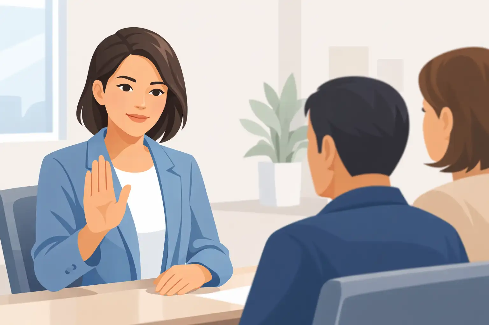
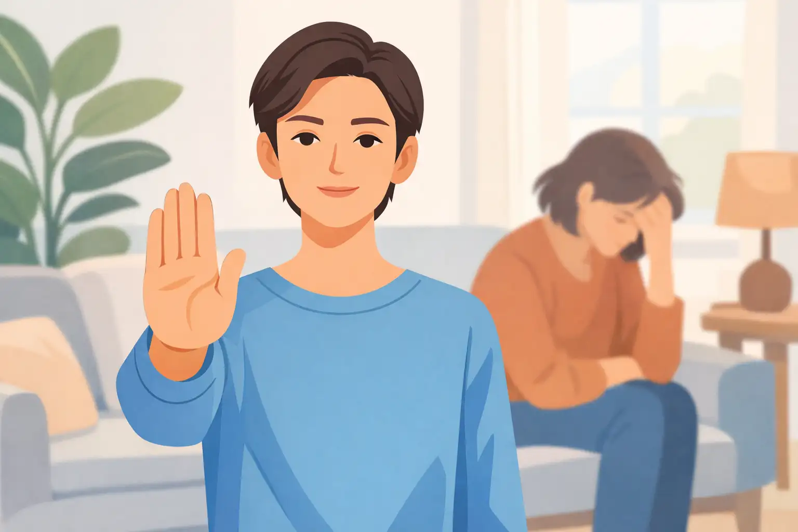
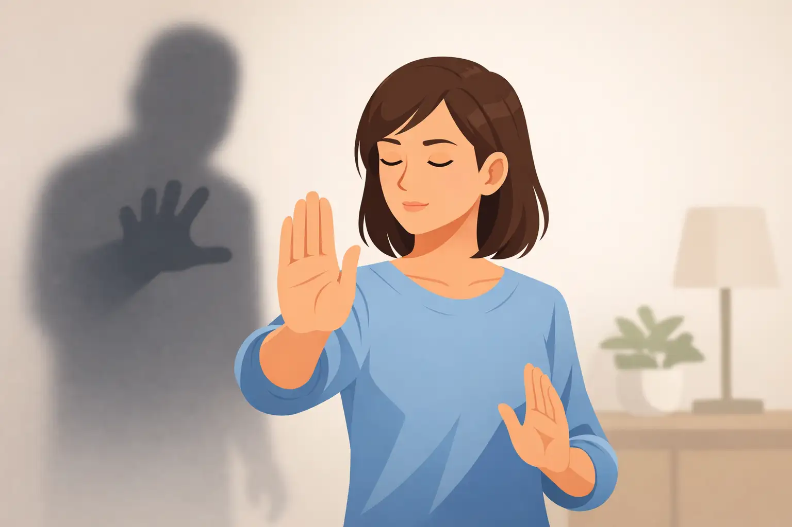
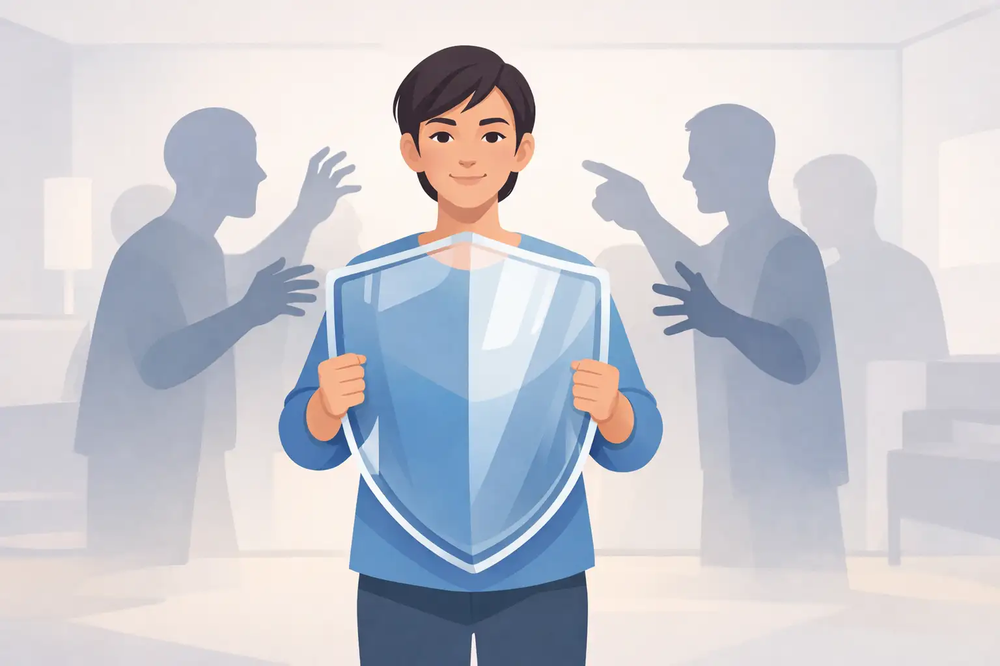
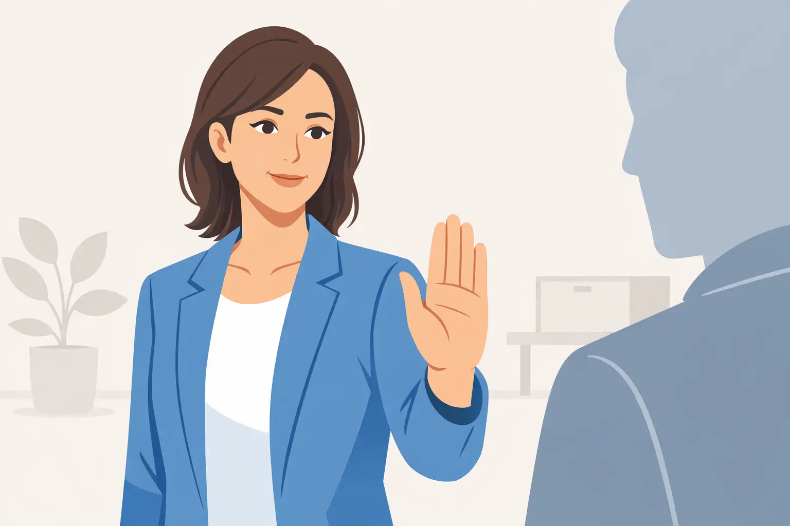
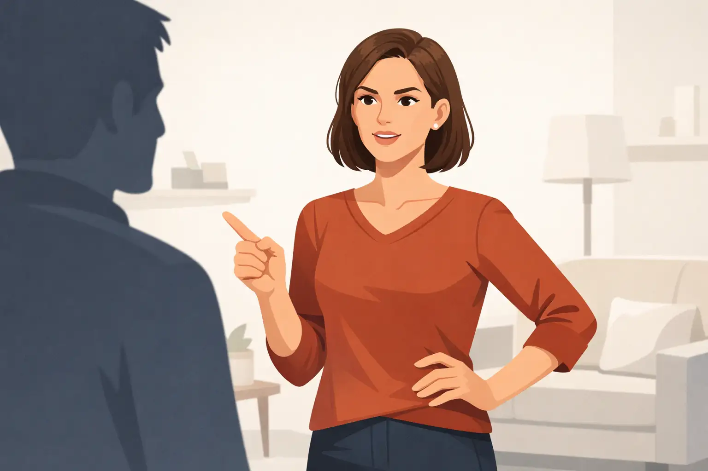
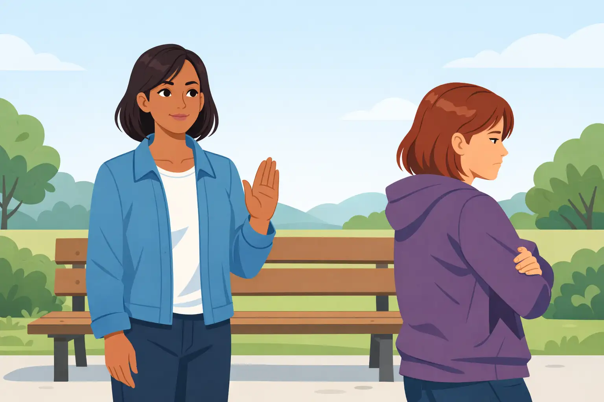
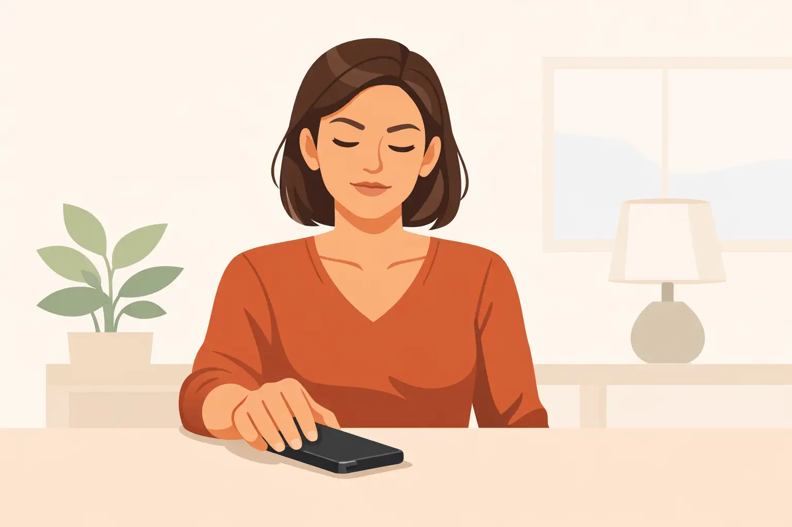

Gain the confidence to correct others who twist your words to their advantage.

Manipulators often twist what you say in order to paint you as unreasonable or to gain the upper hand. The phrase "That's not what I said. Please don't change my words." is a respectful but firm way to draw a line and correct the record. Using this phrase signals you’re paying close attention and value accuracy.
For example, if you say you’d prefer to wait before making a decision and someone responds, “So you don’t care about how I feel?”, you can reply with this phrase to bring the conversation back to the truth.
A common mistake is letting it slide out of politeness, hoping the truth will be obvious, but manipulators rely on you not speaking up. Instead, practice using this phrase calmly, without anger, simply to reset the conversation.
Next, notice how people react when you use it. Consistency is key—repeat the phrase as needed to reinforce your boundaries.
Why is it effective to say, "That's not what I said. Please don't change my words" when dealing with manipulation?
Learn how to resist emotional manipulation that equates your disagreement with being the bad person.

Manipulators often try to make you feel responsible for their emotions, especially anger or sadness. By saying, "You being upset doesn't automatically make me wrong," you clarify that emotions don't determine right and wrong.
Imagine saying no to a favor, and the other person becomes upset, hoping you’ll cave in. Use this phrase to remind them—and yourself—that standing your ground isn’t wrong just because it disappoints someone.
A common misconception is that if someone is upset, you must have done something bad. This isn't true. It's okay for people to feel upset, but that doesn't obligate you to change your decision if you believe it's right for you.
After using this phrase, stay calm and repeat it if necessary. Focus on the issue, not their emotional reaction.
What does the phrase "You being upset doesn't automatically make me wrong" accomplish in a manipulative situation?
Discover how to pause decisions when facing coercion or urgency tactics.

Manipulators will often try to push you into quick decisions, applying pressure or creating a false sense of urgency. The phrase, "I'm not making a decision while I'm being pressured," helps you regain space and clarity.
For example, if someone insists you say yes immediately—"If you don’t decide now, you’ll regret it"—use this phrase to step back. It firmly establishes that you won’t be rushed or bullied.
A mistake people sometimes make is agreeing just to relieve the discomfort. But pressured decisions usually benefit the manipulator, not you. Trust that it’s reasonable to take your time.
Next time you sense pressure, practice saying this phrase out loud. If the pressure increases, repeat your boundary and don’t engage until you’re ready.
When should you use the phrase, "I'm not making a decision while I'm being pressured"?
Build resilience against gaslighting and revisionist conversations.
One subtle form of manipulation is gaslighting—making you question your own memory or experience. Saying, "We remember that differently, and I'm not going to argue about my experience," calmly asserts your reality without becoming defensive or trying to win the argument.
For instance, if someone insists an agreement was different than you recall, use this phrase instead of getting stuck in a back-and-forth. It stops the cycle and anchors your confidence.
A common mistake is believing you must prove yourself or win the argument to be justified. In fact, some differences can’t be resolved, and engaging only frustrates you more.
After using this phrase, disengage politely if needed. You’ve made your point and do not need to defend your memory further.
What is the main benefit of saying, "We remember that differently, and I'm not going to argue about my experience"?
Figure out how to stay steady when manipulators apply guilt as a tactic.

Manipulators frequently use guilt to sway your decisions—reminding you of past favors, emphasizing their sacrifices, or suggesting you’re selfish if you say no. The phrase, "Guilt isn't going to change my answer," calmly acknowledges and defuses these attempts without hostility.
Suppose someone says, "After all I’ve done for you, you can’t do this one thing for me?" Use this statement to make it clear your answer stands, regardless of guilt trips.
A common misconception is that refusing to feel guilty makes you unkind or cold. Remember, genuine relationships don’t rely on guilt as a motivator. Practice responding in a neutral voice to avoid getting drawn into emotional debates.
After using this phrase, redirect the conversation to your original point or pause if necessary. This maintains your boundary and reduces the manipulator’s power.
When someone tries to guilt you into compliance, what's the key reason for using this phrase?
Handle repeated badgering and recognize persistence as manipulation.

Manipulators often try to wear you down by asking the same question repeatedly, hoping you’ll eventually say yes. Saying, "I already answered you. Repeating the question won't change my decision," lets them know your boundary is firm and the tactic won’t work.
For example, if you’ve declined a request and they keep rephrasing it—"Are you sure? Can’t you reconsider?"—this phrase draws the line and stops the cycle.
A mistake is believing you must justify or explain your answer every time. In reality, repetition is a manipulation tactic to break your resolve, not an honest conversation.
Practice this phrase with a calm voice and neutral body language. If the person persists, end the conversation or change the subject to reinforce your decision.
What does repeating your answer accomplish?
Stand strong when someone tries to control your response to their behavior.

Manipulators may try to downplay their actions while dictating that you shouldn’t be upset or angry about them. By saying, "You don't get to hurt me and then decide how I'm allowed to react," you establish that your feelings are valid and deserve to be acknowledged.
If someone criticizes you and then says, "Don't be so sensitive," use this phrase to reject the attempt to control your emotional response. It makes clear that you won’t accept blame for simply reacting to being mistreated.
A mistake people sometimes make is suppressing their emotions to maintain peace, which can lead to resentment and further manipulation. Remember, you are allowed to feel and express your reactions.
Next, practice expressing your reactions calmly and assertively. If challenged, repeat the phrase to remind them your feelings are legitimate.
Why is it important to use this phrase when someone minimizes your reaction?
Recognize manipulative punishment or withdrawal as a red flag.

Manipulators may change their behavior toward you—such as giving you the silent treatment or acting cold—after you say no to their requests. By saying, "If saying no changes how you treat me, that tells me something important," you draw attention to this pattern and make it clear you’re aware of the manipulation.
For instance, if a friend gets distant every time you decline a favor, this phrase opens the door for honest conversation and self-reflection. It communicates that you notice and won’t ignore mistreatment.
A mistake is rationalizing or ignoring these shifts to keep the relationship running smoothly. But noticing these patterns is vital for healthy boundaries.
After using this phrase, observe future behavior and consider discussing or reevaluating the relationship if the pattern continues.
What does it mean if someone treats you poorly after you say no?
Give yourself permission to pause and reflect before answering requests or pressure.
It’s easy to feel pressured into giving an immediate answer, especially when you want to please others or avoid conflict. Saying, "I'm going to think about this before I respond," gives you space to evaluate the situation and decide what's truly best for you.
For example, if someone asks you to take on extra work or do a favor, don't rush to say yes or no. Use this phrase to buy yourself time without feeling guilty.
A misconception is that you appear indecisive or rude by not answering right away, but in reality, thoughtful responses are a sign of maturity and self-respect.
Next time you’re asked for something significant, practice saying this phrase, and use the time to check in with your feelings and priorities.
Why should you use this phrase before agreeing to a request?
Master the art of ending unproductive or manipulative dialogues.

Manipulators often keep conversations going with no resolution, repeating arguments or shifting topics, hoping you’ll eventually give in. The phrase, "This conversation is going in circles, so I'm ending it here," gracefully signals that you recognize the pattern and are choosing to disengage.
Suppose someone keeps rehashing the same complaint or disagreement, hoping you'll change your answer. Use this phrase to close the loop and conserve your energy.
A mistake is feeling forced to continue endlessly for the sake of harmony. But you're allowed to end conversations when they become repetitive and unproductive.
After using this phrase, physically step away, change the subject, or otherwise disengage. This reinforces your boundary and prioritizes your wellbeing.
What is the main effect of ending a circular conversation?
Congratulations! You're now well-equipped to spot and stop manipulation in your life. Practice these phrases and reclaim your personal power.
Use the button below to take the next step, or start over and run through the course again.
Access lifelong daily audios. Free 7 day trial, no credit card requiredDownload the information in this course to keep and refer back to